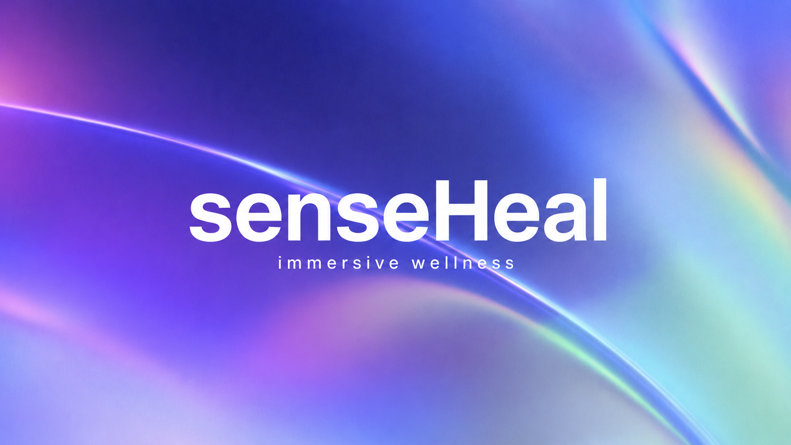

Hi! I am Akshansh Pareek :)

I am a Research Fellow at Sentient Futures, where I study sycophancy in large language models and investigate how system design influences user trust, critical thinking, and decision-making. My research sits at the intersection of Human–AI Interaction, Human–AI Collaboration, participatory design, digital systems, and AI-resilient interfaces.
I am interested in understanding how people make sense of complex digital systems and emerging technologies, and how thoughtful interface design can support critical engagement, meaningful participation, and reduce unintended harms. My work combines interaction design, participatory design, and computational methods to develop technologies that are transparent, accountable, and grounded in the needs of the people and communities they affect.
I completed my Bachelor of Design at Delhi Technological University, where I specialized in Human centred design and Systems Design while independently developing technical skills in data science, machine learning, and natural language processing. Outside research, I previously worked as a 3D artist and contributed to the indie horror game series Fears to Fathom.
Publications
- Schroeder, H., Pareek, A., & Barocas, S. "Disclosure without Engagement: An Empirical Review of Positionality Statements at FAccT." Proceedings of the 2025 ACM Conference on Fairness, Accountability, and Transparency (FAccT '25). DOI / PDF
- Pareek, A., Goswami, T., & Singh, R. "Creativity - ERROR 404: Navigating Creativity and Ownership in the Age of AI-Assisted Students." Manuscript accepted at International Conference on Engineering Design 2025. Preprint
- Latulipe, C., Horn, T., Shields, J., Pareek, A., & Wermie, S. (2026). Exploring the interactional affordances of a web-based 3D virtual world for design exhibitions. In Proceedings of Graphics Interface (GI '26). ACM. PDF
Projects
/
/
/
/


